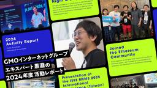

GMO Developers
https://developers.gmo.jp
「GMO Developers」は、GMOインターネットグループが開発者向けの技術情報やイベント情報をお届けするテックブログです。
フィード

GMOインターネットグループエキスパート黒瀧の2024年度活動レポート 1
1
GMO Developers
はじめに 昨年のエキスパート活動では技術の深掘り、国内外のコミュニティへの貢献、そして次世代の育成に重点を置いた、非常に充実した一年となりました。以下4点の活動トピックスで振り返りたいと思います。 1. 技術の最前線での […]
4日前
【技術書典18】協賛ブースでGMOインターネットグループの合同誌を頒布しました！ 2
GMO Developers
はじめに こんにちは。GMOインターネット / GMOインターネットグループ エキスパートの石丸です。 6月1日（日）に開催された「技術書典18」にゴールドスポンサーとして出展させていただきました。 技術書典は技術書にフ […]
5日前

渋谷フクラスにて開催！Yoitoi Summit 2025にGMOインターネットグループが会場提供＆登壇！
GMO Developers
“良い問い”と“酔い問い”が交差する、新しいデザインカンファレンス Spectrum Tokyoが初開催する「Yoitoi Summit 2025」は、“良い問い”と“酔い問い”をキーワードに、ドリンク片手に問いを交わし […]
9日前
終生顧客購買行動予測模型
GMO Developers
はじめに こんにちは。GMOインターネット 嘉山です。 新卒1年目で参画したデータ分析系プロジェクトにて、「Buy Till You Die（BTYD）モデル」を調査する機会があり、今回はそこで学んだ知見を紹介させていた […]
11日前
攻めと守りで理解するPHPアプリケーションのセキュリティ：生成AI時代のXSSとその対策
GMO Developers
はじめに 生成AIがソースコードを提案・生成する時代に入り、Webアプリケーションのセキュリティ対策にも新たな視点が求められています。今回はPHPカンファレンス2025におけるスポンサーセッション「攻めと守りで理解する […]
13日前
ヒューマノイドを展示会にハンドキャリーしてみた
GMO Developers
事前準備 – ソフトウェアの準備 Unitree G1は、歩行の他に、基本動作として「手を振る」「握手」を行うことができます。しかし、今回はブースの運営サポートが目的の派遣となるため、これらの動作では足りませ […]
13日前
ノーコードで始めるAIアプリ開発：Difyの概要と活用可能性
GMO Developers
Difyとは何か？ Difyは、GPT-4やClaudeなどのLLM（大規模言語モデル）をノーコードで活用可能な、オープンソースのアプリ開発基盤です。ライセンスの制限の範囲で商用利用や改変も可能です。 主な特徴 ユースケ […]
17日前
GMO Developers Day 2025 -Security Night- 開催決定!
GMO Developers
📝 イベント概要 GMOインターネットグループが毎年お届けしているテックカンファレンス「GMO Developers Day」。「創る人」ーエンジニアやクリエイター・デザイナーの思想や情熱を体験として社会に届け […]
20日前
【MCP×AIエージェント】Windows対応MCPサーバーとデータ分析AIアプリ開発入門
GMO Developers
はじめに 2025年以降、AIエージェントやAIアプリケーションの開発現場でMCP（Model Context Protocol）との連携が重要になってきます。 本記事では、MCPの概要と、TypeScriptでMCPサ […]
20日前
【開催レポート】第4回 京大ミートアップ：暗号と秘密計算、そして未来のキャリアを語る
GMO Developers
イベント概要 【セキュリティ×先端研究】第4回 京大ミートアップ supported by GMO先端研究を社会に届ける： サイバーセキュリティの先駆者からのメッセージ 日時：2025年5月30日（金）17:30～20: […]
25日前
JSAI2025参加レポート
GMO Developers
はじめに JSAIとは？ JSAI（人工知能学会全国大会）は、年に一度、国内のAI研究者が一堂に会する日本最大級の学術イベントです。企業にとっては、採用活動・情報収集・ネットワーク形成など、さまざまなメリットがあります。 […]
1ヶ月前
開発・運用・改善…エンジニアの仕事をどう変える？生成AI活用の最前線を語る！
GMO Developers
イベント概要 生成AIの利活用が注目される中、実際の導入プロセスや現場での運用には数多くの試行錯誤が伴います。本イベントでは、ココナラ・GMOインターネットグループ2社それぞれの立場から生成AI導入の背景・ハードル・導入 […]
1ヶ月前
そのコード、Vibeでいける？-AI時代のプロトタイプ開発、最前線-
GMO Developers
はじめに 「そのコード、Vibeでいける？」 最近、こんな言葉を社内で聞くようになった人は、きっと少なくないはずです。 Vibe Coding——それは、AIに自然言語で指示を出してコードを生成させるという、新しい開発ス […]
1ヶ月前
Config 2025 現地参加レポート、AI時代のプロダクトデザインについて考える
GMO Developers
Configとは？ ConfigはFigmaが主催するグローバルデザインカンファレンスで、年に1度サンフランシスコで開催されます。Figmaの新機能リリース発表に加え、世界中から招かれた登壇者による多彩なセッションが行わ […]
1ヶ月前
【Hack-1グランプリ2025 デモデー協賛レポート】“Hackする情熱”が集結！学生×企業が本気で挑んだ、最終決戦の1日
GMO Developers
デモデー｜イベント概要 ショートプレゼン「Hack-のすゝめ」by GMOメディア 岡田悠希さん イベントの幕開けを飾ったのは、GMOメディア株式会社のAIスペシャリスト・岡田悠希さん。ショートプレゼン『Hack-のすゝ […]
1ヶ月前
【ヒューマノイドを人材派遣】Japan Drone 2025 出展レポート～ドローン＆ロボット展示会～
GMO Developers
今回は、GMO AI＆ロボティクス商事株式会社のコンテンツを中心に、陸・海・空のあらゆる現場で活躍するドローン・ロボット技術と、それを支える通信インフラやセキュリティの重要性を、「体験」と「ストーリー」によって伝える構成 […]
1ヶ月前
【2025年版】法人向けAIツール比較：ChatGPT Team／Claude Team／Google／Felo／Canva を徹底解説【料金・機能・用途別】
GMO Developers
企業のDX推進が加速する中、「社内で安全に使えるAIツールを選びたい」「生成AIを業務に活かしたいが、どれが最適か分からない」という声が増えています。そこで本記事では、法人契約が可能な代表的AIツール5種──ChatGP […]
1ヶ月前
PHP Conference Japan 2025にトップスポンサーで協賛いたします
GMO Developers
PHP Conferenceとは 2000年より年に一度開催されている日本最大級のPHPのイベントです。 WEBサーバにインストールされているシェア8割を超える人気言語のイベントとして、初心者から上級者まで幅 […]
1ヶ月前
【NW設定自動化】Ansible+ChatGPTでネットワーク機器の設定変更はできるのか？試してみた【後編】
GMO Developers
Ansible＋ChatGPT ネットワーク機器設定変更のメリット Ansibleでネットワーク機器の設定変更する場合のフロー まず始める前に、そもそもAnsibleによる自動化ってどうなの？ラクになるの？ と、基本に立 […]
2ヶ月前
デザインコンテスト「GMO DESIGN AWARD 2025」 開催決定！
GMO Developers
GMO DESIGN AWARDとは GMO DESIGN AWARD（以下、本コンテスト） は、GMOインターネットグループが主催する、18歳から29歳の若手クリエイター・デザイナーを対象としたAI活用型のデザインコン […]
2ヶ月前
IETF122 ＠Bangkok参加レポート｜PQCとAIが交差する“暗号技術の今”【現地レポ＋技術解説】
GMO Developers
IETFとは？RFCと暗号の関係 Internet Engineering Task Force（IETF）は、インターネットのアーキテクチャの進化と円滑な運用に焦点を当てている、ネットワーク設計者、運用者、ベンダー、研 […]
2ヶ月前
【Hack-1グランプリ2025 キックオフレポート】学生100名が本気で挑む、AI時代のものづくり
GMO Developers
Hack-1グランプリとは？ Hack-1グランプリは、一般社団法人デザインシップが主催する学生向けの実践型ハッカソンです。参加対象は、大学生・大学院生・専門学校生・高専4年生以上の学生で、技術、デザイン、ビジネスのいず […]
2ヶ月前
【協賛決定】JJUG CCC 2025 Springに「fincode byGMO」が登場！ブース＆セッションでJavaトークしませんか？
GMO Developers
JJUG CCCって？ 「JJUG CCC（Japan Java User Group Cross Community Conference）」は、年2回開催される日本最大級のJava技術カンファレンス。現場の知見、実践 […]
2ヶ月前
DESIGN LEAD 1on1にGMOインターネットグループエキスパート・デザイナー3名の登壇が決定！
GMO Developers
Vol.1：DESIGN LEAD 1on1 第1回はGMOインターネットグループとDeNAのデザイナー対談企画となります。 イベント概要 GMOインターネットグループ登壇セッション概要とスピーカー 「AI×プロダクトデ […]
2ヶ月前
【インタビューVol.3 後編】変化を起こす異物になれ。デザイン文化を育て続けるという覚悟
GMO Developers
「GMOイエラエらしさ」って何？競合分析で方向性を探る —社内ヒアリングを通じて現状が見えてきたあと、次にどのようなステップに進まれたのでしょうか。 大倉 太一｜GMOサイバーセキュリティ byイエラエ株式会社 ブランド […]
2ヶ月前
【インタビューVol.3 前編】「GMOイエラエらしさって何？」バラバラな組織を束ねる共通言語を求めて
GMO Developers
制作の楽しさに目覚めた学生時代 —大倉さんのものづくりへの関心は、どのようなきっかけで芽生えたのでしょうか。 大倉 太一｜GMOサイバーセキュリティ byイエラエ株式会社 ブランドマネジメント室 室長 —大学院修了後は、 […]
2ヶ月前
「どうやって来たんですか？」 〜フェリーによる移動イベント Rubyist Bulk Load を実施しました〜
GMO Developers
「どうやって来たんですか？」 京都で開催された RubyKaigi 2016 以来、首都圏外で RubyKaigi が開催されるようになって 10 年近くが経ちますが「ところで、どうやって来たんですか？」という会話は珍し […]
2ヶ月前
AIの伸長とITエンジニアの未来
GMO Developers
「ITエンジニア不要論」にどう向き合うか 既に様々な記事やシーンで話題となっておりますが、コーディングLLM、AIコードアシスタント、AIエージェントの台頭によって予想される「ITエンジニア不要論」について考えていきます […]
2ヶ月前
技術書典18にトップスポンサーとして協賛いたします
GMO Developers
技術書典とは 技術書典は技術書にフォーカスした技術共有と普及のためのイベントです。ITエンジニアを中心に情報発信を試みるエンジニアと、より広くより深く技術を求めるエンジニアが出会う場を提供し、技術の普及と情報交換を目的と […]
2ヶ月前
【開催レポート】GMOインターネットグループ横断ホスティングエンジニア交流イベント – クラウドLinuxやAI活用の最新事例を語り合う
GMO Developers
エキスパートに求められるミッションと役割 GMO Developer Expertsとは、GMOインターネットグループの開発者支援制度の1つで特定の専門分野における第一人者として業界の発展に寄与するとともに、GMOインタ […]
2ヶ月前
エキスパート×SECCON実行委員長・三村が語る！SECCON 13 電脳会議2025開催レポート
GMO Developers
SECCON とは？ 実践的情報セキュリティ人材の発掘・ 育成、技術の実践の場の提供を目的として、競技やワークショップを提供するイベントです。 世界でもトップレベルの技術力を競い合う CTF である「SECCON CTF […]
2ヶ月前
【Capybara×生成AI】自然言語によるブラウザ自動テストを試す
GMO Developers
はじめに 今回紹介する生成AIを活用した自動テストツールは「Charai」という名前でGitHubに公開されています。Charai(Chat + Ruby + AI) driver for Capybara. Proto […]
2ヶ月前
【暗号のおねぇさんこと酒見 由美】「高機能暗号とそれを支える物理・視覚暗号シンポジウム」に登壇しました
GMO Developers
GMOサイバーセキュリティ byイエラエをはじめとするGMOインターネットグループでは、「ネットのセキュリティもGMO」をスローガンに、セキュリティ分野でさまざまな取り組みを進めています。2025年2月には、世界初の24 […]
2ヶ月前
エンジニア・クリエイターを目指す学生向けハッカソン「HACK-1グランプリ」にトップ協賛いたします
GMO Developers
HACK-1グランプリとは 「HACK-1グランプリ」は、デザイナーやエンジニアを目指す学生が、約1ヶ月かけてアプリやサービスを開発する長期型ハッカソンです。現役エンジニアやデザイナーによるメンタリングや生成AIを活用し […]
3ヶ月前
【インタビューVol.2 後編】動き出した“横断連携”。UX改善から対外発信まで、組織を変えたデザイナーたちの実装力
GMO Developers
「UXチェックリスト」を共通言語に、全社を巻き込む —GMOインターネットグループ全体への課題感が高まるなかで、社内的にはどのような取り組みが進められたのでしょうか？ 岡本 くる美｜GMOメディア株式会社 サービスデザイ […]
3ヶ月前
【インタビューVol.2 前編】デザインで組織を動かす。GMO全社横断クリエイティブ改革の始まり
GMO Developers
危機感から始まった、GMOインターネットグループ横断型会議体の立ち上げ —お二人は「クリエイターシナジー会議」などを通じて、GMOインターネットグループ全体のクリエイティブを強化する取り組みを進めていらっしゃるんですよね […]
3ヶ月前
業務の生産性を向上させるSlack活用術
GMO Developers
多くの企業がチャットツールとしてSlackを導入しています。しかし、単に導入するだけでは十分な効果を得ることはできません。本記事では、Slackをより効果的に活用するための具体的なテクニックを紹介します。 1. ワンクリ […]
3ヶ月前
【NW設定自動化】をAnsible+ChatGPTで知識ゼロからできるのか？試してみた【前編】
GMO Developers
いちおうツール説明 ChatGPTとは？ 言わずと知れたOpenAI社の作った生成AI。基本は言語モデルであり、言語を受け付け、言語で返事をします。この入力言語の事を「プロンプト」と呼びます。プロンプトを細かく記載するこ […]
3ヶ月前
【技書博初出展！】GMOインターネットグループとして3冊目の技術同人誌を出版しました！
GMO Developers
はじめに 私は2024年4月からGMOインターネットグループ デベロッパーエキスパートとして、GMOインターネットグループを横断した情報発信や技術広報に関わる活動を行っております。 そのデベロッパーエキスパートの活動の一 […]
3ヶ月前
技術広報として、現場の熱を感じ続けたい-RubyKaigi 2025 参加レポート
GMO Developers
Ferry Sponser提供の背景──“旅”を通じてつながるコミュニティ 今回のRubyKaigiの舞台は四国・愛媛県松山市。そこでGMOインターネットグループからはGMOペパボプレゼンツで、東京から徳島へのフェリー移 […]
3ヶ月前
Creators MIX 2025 登壇レポート「クリエイティブとAIの最前線 2025」
GMO Developers
トークセッション「クリエイティブとAIの最前線 2025」 ①AI活用で進む多様性&市場拡大 まず口火を切ったのは、アドビ株式会社・阿部成行氏です。「テクノロジーとクリエイティブは非常に密接に連携している」という […]
3ヶ月前
【グループ9社が参加！】GMOインターネットグループ Advent Calendar 2024 振り返りレポート
GMO Developers
アドベントカレンダー開催の背景と目的 私はもともとGMOアドマーケティングのアドベントカレンダーの運営を担当しており、GMOアドマーケティングとして、2018年から2023年までの6年間、アドベントカレンダーの企画に参加 […]
3ヶ月前
【インタビューVol.1 後編】“創るだけ”を超えていけ。GMOインターネット 丸山清人が語る、事業を動かすデザイナーとは
GMO Developers
キラキラの裏で思った。「現場が育ってなきゃ意味がない」 —エグゼクティブリードに就任されるまでには、どんな歩みがあったのでしょうか？ 丸山 清人｜GMOインターネット株式会社 ドメイン・クラウド事業本部 クリエイティブ部 […]
3ヶ月前
【インタビューVol.1 前編】「これが上場企業のクリエイティブ？」疑問から始まった、自走できるデザイナー組織づくりの旅
GMO Developers
多様な領域を横断しながら、チームとクリエイティブを支える ー丸山さんは現在、GMOインターネット株式会社で非常に幅広い業務を手掛けられているそうですね。 丸山 清人｜GMOインターネット株式会社 ドメイン・クラウド事業本 […]
4ヶ月前
DevSecOps文化を育てる：少しずつ、でも着実にチームと前進するために
GMO Developers
はじめに：文化は、導入するものではなく、育てていくもの この記事は、複数のチームが関わる中規模〜大規模な開発組織で、DevSecOpsを推進しようとしている方々に向けて書いています。横断チームのマネージャーとして、組織を […]
4ヶ月前
今更ですが、改めてLLMの何がすごいのかをおさらいしてみた ─Word EmbeddingからReasoningまで─
GMO Developers
はじめに 大規模言語モデル(LLM, Large Language Model)は、近年とても注目を集めています。しかしネット上の資料を見ていると、数式や数学的な手法の解説が多く「そもそもなんでこんなことをしているの？」 […]
4ヶ月前
GMOインターネットグループのロボット人材派遣型サービス始動─ヒューマノイド×AIで切り拓く、未来への一歩
GMO Developers
はじめに：ロボット人材派遣の“はじまりの日” 2025年4月3日、GMO AI＆ロボティクス商事は、最新型ヒューマノイドロボットを活用した「ロボット人材派遣型サービス」の提供を正式に開始しました。従来の「ロボットレンタル […]
4ヶ月前
技術で創る笑顔と感動～GMO Developers & Creators ブログ 2025年度の指針とは？～
GMO Developers
インターネット産業革命の今 25年前、インターネットが産業革命だと言っても、誰も信じませんでした。しかし、いまやその革命は現実となり、次の30年に向けてさらなる進化を遂げようとしています。インターネット技術とデザインは、 […]
4ヶ月前
無課金で物件の相場単価を知る！Difyでチャットボット作成
GMO Developers
チャットボットの完成イメージ 以下のような結果を出力するチャットボットの作成を目指します。 不動産情報ライブラリからデータを取得し、LLM（大規模言語モデル）を使って物件相場の単価を算出します。おまけで、今後の単価も予測 […]
4ヶ月前
RubyKaigi 2025にFerry Sponserとして協賛いたします
GMO Developers
Ruby Kaigiとは RubyKaigiはプログラミング⾔語Rubyに関する世界最⼤級の国際カンファレンスです。最先端の技術セッションの数々が披露されるプログラマーズカンファレンスとして、またRubyの処理系⾃体の開 […]
4ヶ月前